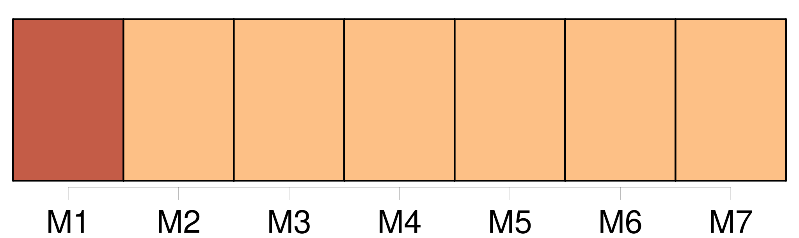
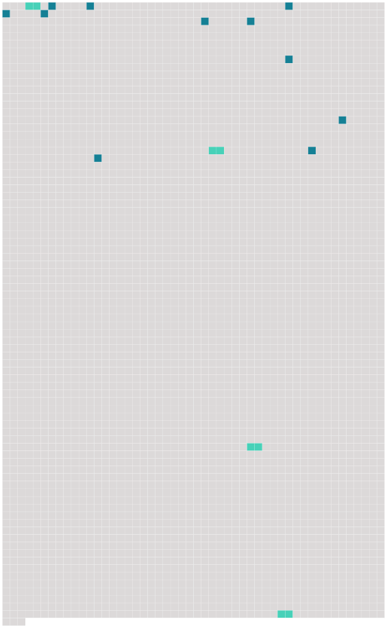

Longueur nb maillons : 15 mentions |
  |
MADEMOISELLE FIFI
[Tu] riais beaucoup, d'avance, de mes tendresses noires, comme [tu] disais ; et, [tu] me voyais déjà revenir suivi d'une grande femme en ébène, coiffée d'un foulard jaune, et ballottante en des vêtements éclatants. [1 phrases] [Tu] m'as écrit, dans [ta] dernière lettre : « Quand je sais comment on aime dans un pays, je connais ce pays à le décrire, bien que ne l'ayant jamais vu. [7 phrases] Je ne [te] dis rien de mes premiers temps de séjour en Algérie. [14 phrases] [Tu] connais ces demeures si souvent décrites. [7 phrases] [mon ami] , il est deux supplices de cette terre que je ne [te] souhaite pas de connaître : le manque d'eau et le manque de femmes. [1 phrases] [Je] ne sais. [87 phrases]
» [55 phrases]
.. |
 |
La ressource peut être téléchargée sur la page Ortolang
Si vous avez des questions ou vous voyez des erreurs, merci d'envoyer un mail à silvia.federzoni89@gmail.com
Site développé par S. Federzoni (contact)